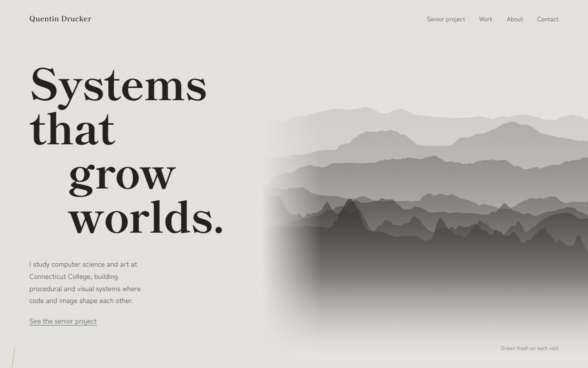
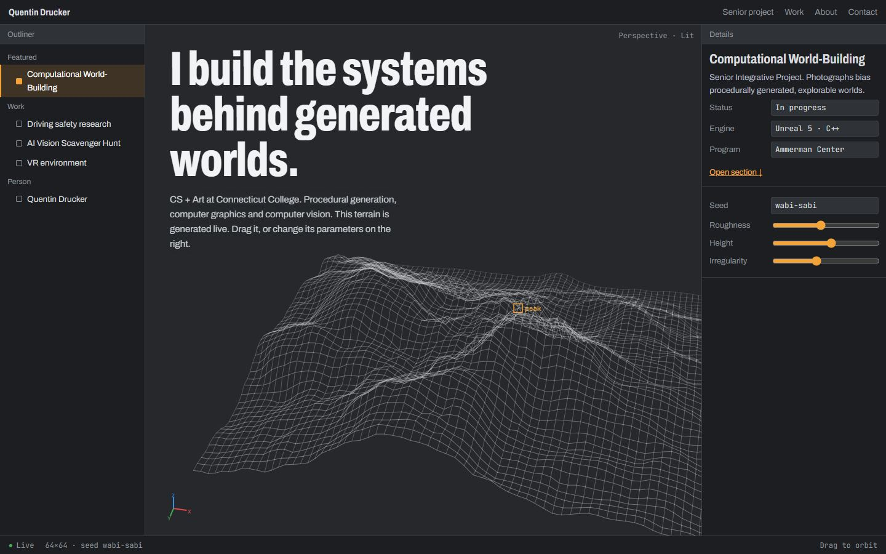
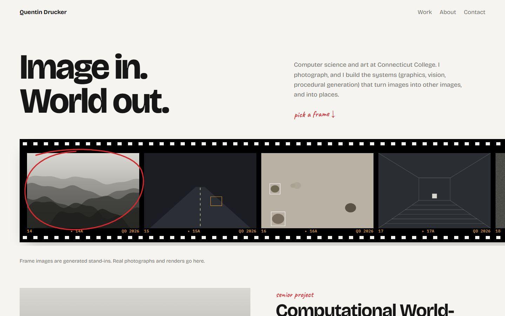
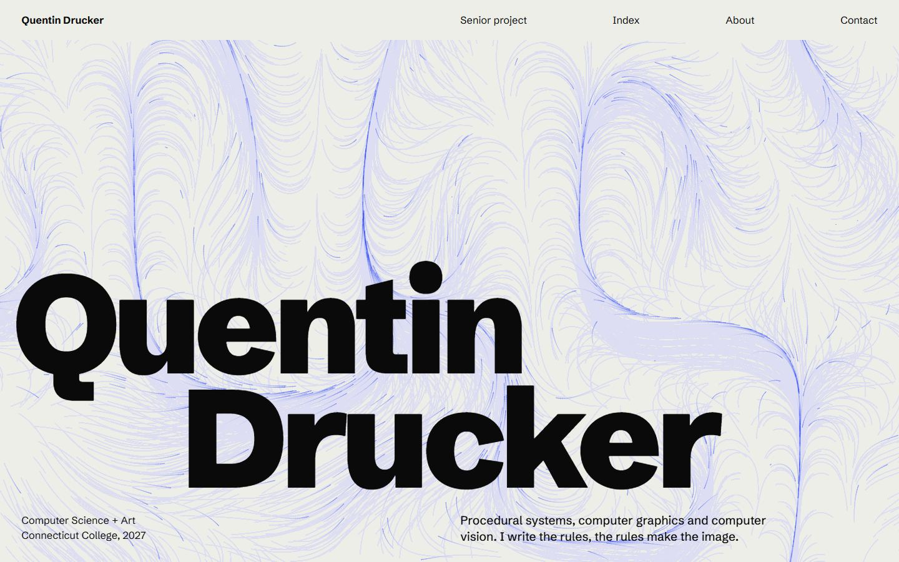
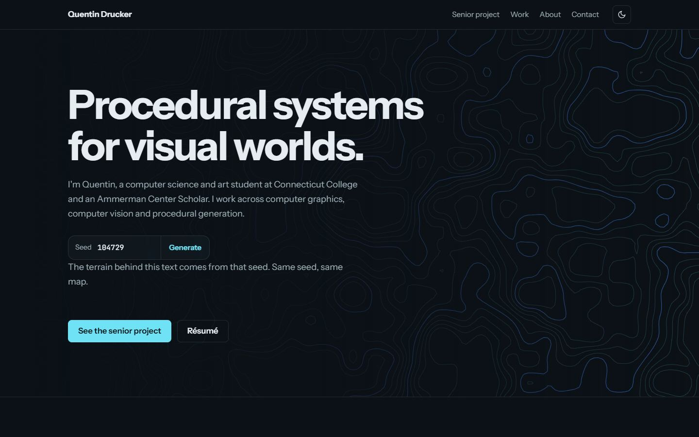

Style explorations
Five standalone directions for the portfolio, all using the same real content. Each one makes a single bold choice and keeps everything else quiet. Image areas are labeled placeholders. Open one, resize the window, and try it on your phone. Mixing elements across directions is fine.

1 · Weathered
The SIP's wabi-sabi philosophy as the site's visual language: stone-grey paper, ink and moss, asymmetric layout.
Bold move: ink-wash mountains drawn fresh on every visit, plus a gold kintsugi seam down the page.
2 · Viewport
The first screen is a game-engine editor: an outliner of projects, a details panel, and a live terrain in the viewport.
Bold move: drag the terrain to orbit it, and change its seed, roughness and irregularity.
3 · Contact Sheet
Photography-first. Projects are frames on a strip of film, with edge print and sprocket holes.
Bold move: click a frame and a grease-pencil circle selects it and opens it under the loupe.
4 · Signal
Swiss poster typography: an oversized name, a strict grid, one ultramarine color, and a project index.
Bold move: a live flow field threading behind the name that reacts to the pointer.
5 · Refined
The current dark slate and cyan identity with dark/light themes, minus the template habits.
Bold move: the visual-seed demo becomes the hero, a topographic map from any seed you type.